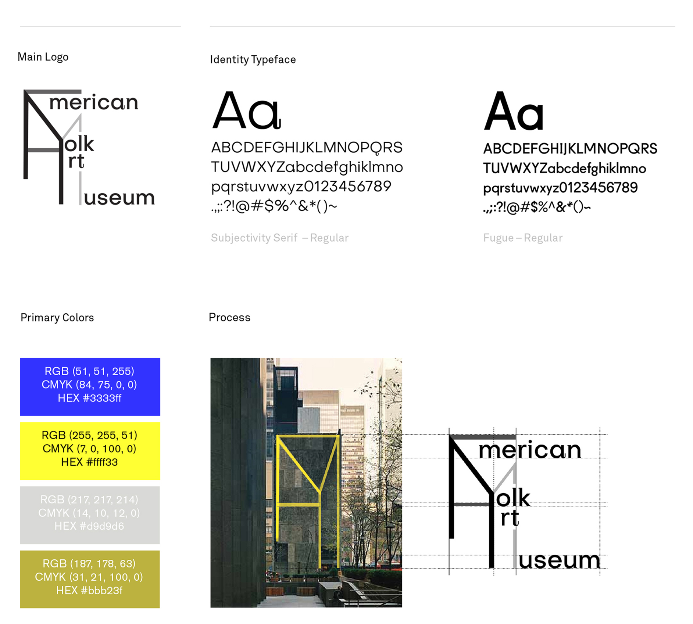
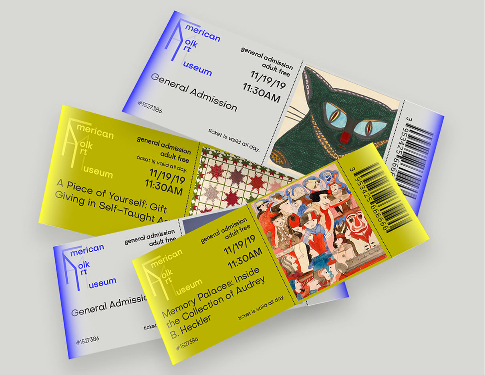
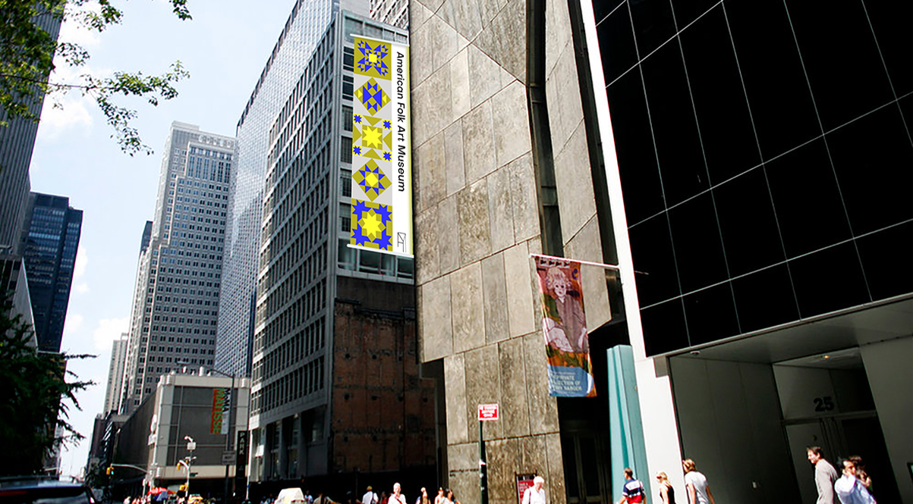

American Folk Art Museum
Objective
Rebranding for American Folk Art Museum located in New York, NY
Role
Brand Identity, Print
Tools
Illustrator, Affer Effects, Photoshop

Overview
I was inspired by the distinct exterior look of the building, compared to the modern MOMA building right next to it. I incorporated the outline of the building with the first letters of the title of the museum.

Visual Design


Brand Identity
I wanted to approach folk art with a new perspective; I choose these colors to have both decorative bold colors and down-to-earth colors.




Logo Iteration